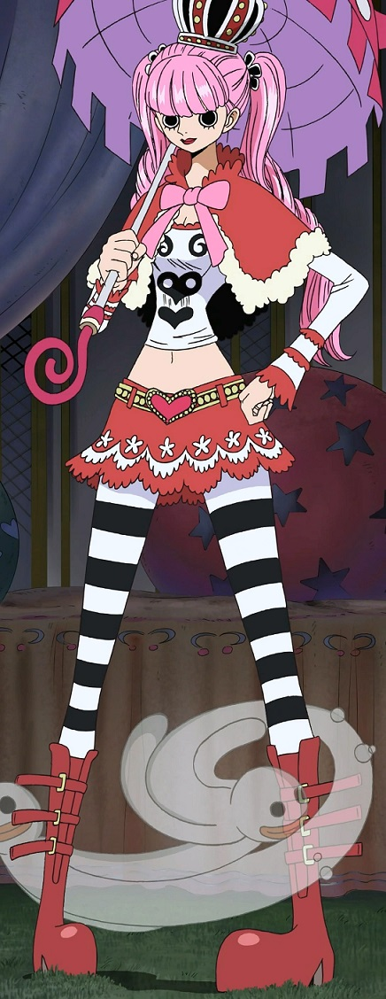

Estilo Visual Único
Visualmente este personaje luce llamativo, ya que su estilo me parece único y usa outfits aesthetics, podría decirse que viste de Gothic Lolita, con negro, blanco y rojo brillante como parte de los colores en su atuendo, su cabello es rosa y largo. Ella es dibujada por Oda (el creador) en un estilo bastante diferente al de otras mujeres que salen en la historia, con unos ojos grandes y redondos, pero aparte de eso, sigue siendo una chica atractiva para mí.
Participación en el Arco de Thriller Bark
Justamente también ella aparece en el arco de Thriller Bark, mi parte favorita del universo de One Piece, por muchas razones pero principalmente porque la tripulación protagonista, es decir la de Luffy, pasa a través de muchos sucesos paranormales e inexplicables para ellos.
Habilidad Única
Una de esas razones “paranormales” son los fantasmas, ya que con su habilidad, la cual es heredada por una Akuma No Mi (una fruta especial que otorga ciertas habilidades a quienes la consuman), específicamente la Horo Horo No mi, que es capaz de crear fantasmas los cuales al atravesar el cuerpo de alguien lo vuelve completamente deprimido y sin motivación alguna en la vida durante algunos momentos o mientras dure el efecto, así puede atacar sin tener contacto físico. También puede crear una versión de ella misma en forma de fantasma, igualmente de esta manera puede controlarla sin tener que luchar directamente, aunque esto le incluye una debilidad ya que su cuerpo físico real tiene que resguardarlo bien mientras pase a su fantasma porque sólo puede controlar uno a la vez. Pero mientras sólo use sus fantasmas comunes, puede crear cuantos quiera, es por eso que también se le conoce como “Ghost Princess”.
Historia
Aparte de todo esto, ella en la historia es un personaje antagónico, ya que trata de impedir que la tripulación de Luffy (mugiwaras) avancen en contra de su jefe llamado Gecko Moria, el cual puede quitarle la sombra a una persona y colocarla a cadáveres, muchas veces lo que pide ella es para tener súbditos tiernos, pero estos son animales muertos “revividos” gracias a las sombras. Tiene de mano derecha a su oso de peluche “revivido” llamado Kumashi, aunque ella suele ser cruel con él porque no le permite hablar ya que si lo hace no se ve tierno.
Personalidad Infantil pero Decidida
La personalidad de Perona es un contraste interesante. A pesar de su amor por lo "kawaii" y su actitud infantil en algunos aspectos, también demuestra ser capaz de tomar decisiones propias y actuar con determinación cuando es necesario. Esta dualidad en su personalidad la hace un personaje complejo y multifacético. Otra de las cosas que más me gustan es que al igual que muchos otros personajes de One Piece, Perona tiene su propia risa distintiva, que utiliza la palabra Horo (por ejemplo, «¡Horo-horo-horo-horo-horo!») con un toque femenino e infantil a la vez.
Conclusión
En resumen, Perona de One Piece ha capturado mi interés y afecto por una serie de razones convincentes. Su estilo visual único destaca por su ambiente paranormal y misterioso, añade un nivel adicional de intriga a su personaje y refuerza su importancia en la trama general. La habilidad sobrenatural de Perona, derivada de su consumo de la Horo Horo No Mi, la hace destacar aún más. Su capacidad para generar fantasmas que pueden inducir depresión en sus oponentes, así como su astucia al usar sus habilidades sin exponerse al peligro directo, la convierten en un personaje poderoso y astuto. Además, su papel antagónico en la historia, junto con su compleja relación con Kumashi, agregan capas adicionales de profundidad a su carácter y la hacen más fascinante como figura central en la narrativa. Admiro la dualidad en la personalidad de Perona, que oscila entre una apariencia y actitud infantil y una determinación valiente cuando se enfrenta a desafíos. Su capacidad para equilibrar estos rasgos contrastantes la convierte en un personaje complejo y multidimensional que es intrigante de observar. Además, su risa distintiva, que refleja su personalidad única y encantadora, la hace aún más memorable en el vasto mundo de One Piece. En general, Perona se destaca como un personaje atractivo y cautivador en One Piece debido a su estilo distintivo, su participación en la trama emocionante, sus habilidades sobrenaturales y su personalidad compleja y multifacética.